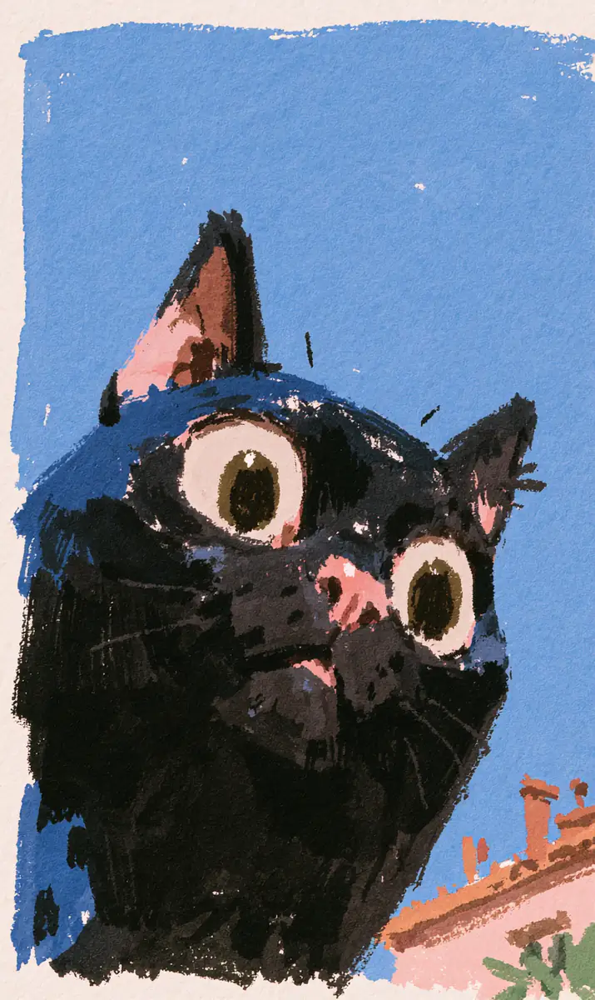

기왓장의 이끼가 발바닥에 축축하게 눌어붙던 그 순간, 까막은 숨을 삼켰다.
[The moss on the roof tiles pressed damp against its paws, and in that instant Kkamak swallowed its breath.]
건너편 옥상, 빨래가 널린 줄 아래에서 태식이 무언가를 질질 끌고 있었다.
[On the rooftop across the way, beneath a line strung with laundry, Taesik was dragging something along.]
바람에 흔들리는 흰 이불보가 자꾸만 그 형체를 가렸다가 드러냈다.
[A white sheet swaying in the wind kept hiding the shape, then revealing it again.]
까막은 그것이 사람의 다리라는 걸 알아차리고도 울지 않았다.
[Even after Kkamak realized it was a person’s leg, it did not cry out.]
고양이의 목구멍에는 경고를 담을 문법이 없었다.
[A cat’s throat holds no grammar for warning.]
태식은 이마의 땀을 손등으로 훔치며 잠시 하늘을 올려다보았다.
[Taesik wiped the sweat from his brow with the back of his hand and glanced up at the sky for a moment.]
그 시선이 지붕을 넘어오기 직전, 까막은 본능적으로 굴뚝 그늘 속으로 몸을 낮췄다.
[Just before that gaze crossed the rooftop, Kkamak instinctively lowered its body into the chimney’s shadow.]
심장이 갈비뼈를 두드리는 소리가 온 도시보다 크게 들렸다.
[The sound of its heart knocking against its ribs seemed louder than the whole city.]
아래 골목에서는 두부장수의 종소리가 아무 일 없다는 듯 울려 퍼졌다.
[Down in the alley, the tofu seller’s bell rang out as though nothing were the matter.]
태식은 이불보로 형체를 둘둘 말아 물탱크 뒤편으로 밀어 넣었다.
[Taesik wrapped the shape round and round in the sheet and shoved it behind the water tank.]
그러고는 아무 일도 없었던 사람처럼 담배 한 개비에 불을 붙였다.
[Then, like a man to whom nothing had happened, he lit a single cigarette.]
연기가 파란 하늘로 곧게 피어오르는 동안, 까막의 두 눈은 그 장면을 삼켜 버렸다.
[As the smoke rose straight into the blue sky, Kkamak’s two eyes swallowed the whole scene.]
이제 이 도시에서 진실을 아는 존재는 말 못 하는 짐승 하나뿐이었다.
[Now the only being in this city who knew the truth was a single speechless beast.]
며칠 뒤, 골목에는 사람을 찾는 벽보가 붙었다.
[A few days later, a missing person notice was pasted up in the alley.]
까막은 그 종이 위에 앉아, 웃는 얼굴의 사진을 오래도록 내려다보았다.
[Kkamak sat upon that paper and looked down for a long while at the smiling face in the photograph.]
사람들은 고양이를 쫓으며 재수 없다고 혀를 찼다.
[People shooed the cat away, clicking their tongues that it was bad luck.]
아무도, 그 노란 눈동자가 왜 태식의 대문 앞을 떠나지 않는지 묻지 않았다.
[No one asked why those yellow eyes would not leave the front of Taesik’s gate.]